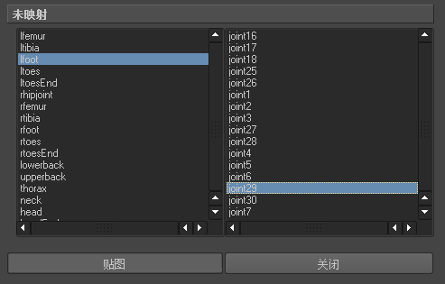
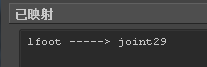

有关映射角色动画的信息，请参见“关键帧 > 角色映射器”(Key > Character Mapper)。
将动画从一个角色映射到另一个角色
- 选择“关键帧 > 角色映射器”(Key > Character Mapper)。
- 选择源角色的根关节。
- 在“角色映射器”(Character Mapper)窗口中，单击“加载源”(Load Source)。
- 选择目标角色的根关节。
- 单击“加载目标”(Load Target)。
- 从左侧的未映射列中选择一个节点或属性，然后从右侧的列中选择相应的节点或属性。例如，如果源角色的左踝关节是 lfoot，目标角色的左踝关节名为 joint29，那么您的选择就类似于下图：

- 单击“贴图”(Map)。

- 重复步骤 6 和 7，直到将源角色和目标角色中的所有节点或属性都进行了映射。
现在即可在“Trax 编辑器”(Trax Editor)中在映射的角色之间复制和粘贴动画片段。
根据层次，将动画从一个角色映射到另一个角色
- 选择源角色的根关节。
-
按住 Shift 键并单击选择目标角色的根关节。
- 选择“关键帧 > 角色映射器”(Key > Character Mapper)。
- 执行下列操作之一：
- 在“角色映射器”(Character Mapper)中，选择“编辑 > 根据层次映射”(Edit > Map based on hierarchy)。
- 从源角色和目标角色中各选择一个节点或属性。
- 在“角色映射器”(Character Mapper)中，选择“编辑 > 根据层次映射”(Edit > Map based on hierarchy)。